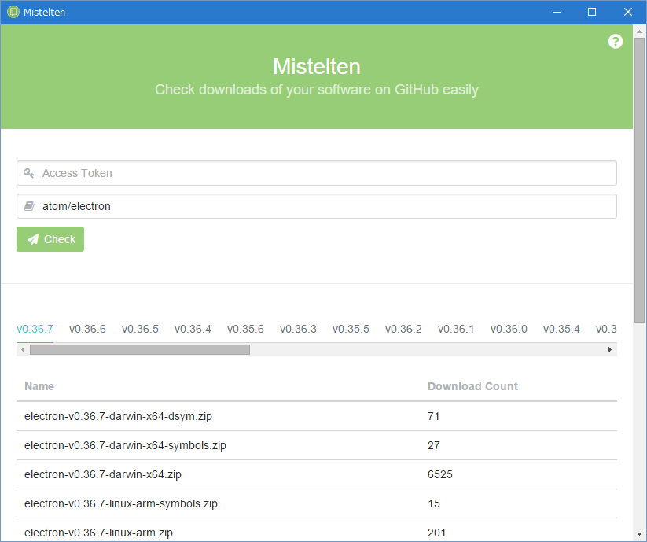

Mistelten
Check downloads of your software on GitHub easily
Download
How to use
-
GitHubのPersonal access tokensにアクセスし、「Generate new token」をクリックします。

-
「Token description」に適当な名前を入力します。
また、自分がアクセスできるPrivate Repositoryの情報も確認したい場合は「repo」にチェックを入れます。Public Repositoryのみの場合はチェックを入れなくて構いません。
入力し終わったら「Generate Token」をクリックします。
-
Access tokenが表示されるので忘れずにコピーします。後でこのページを見てもAccess tokenを確認することはできないので気を付けましょう。(もし忘れてしまった場合は再生成できます)
-
Misteltenを起動し、「Access Token」に3でコピーしたAccess Tokenを、「Repository Name」にリポジトリの名前を入力し、「Check」をクリックします。

-
ダウンロード数が表示されます。なお、「Access Token」・「Repository Name」に入力した内容はアプリを閉じる際に自動的に保存されます。
